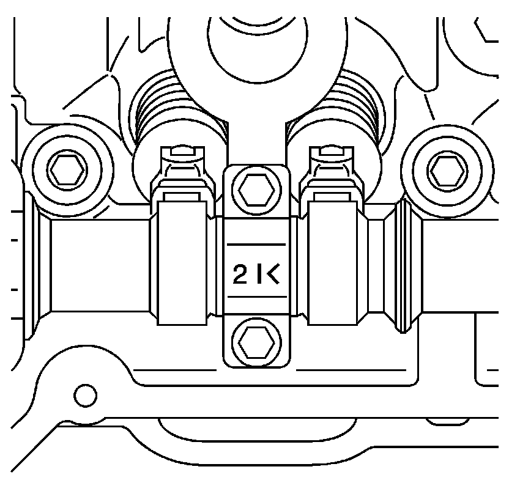
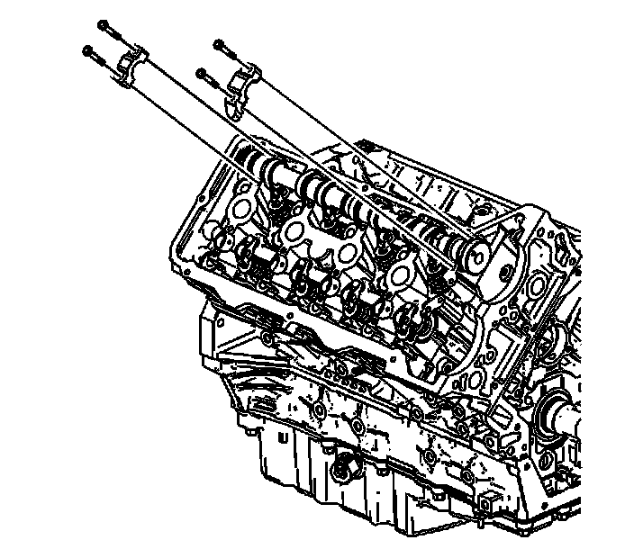
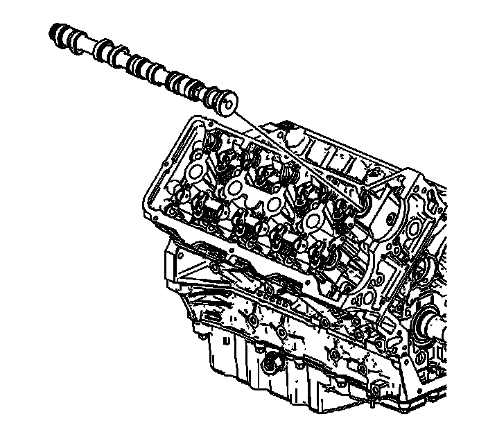

37. Intake Camshaft Removal - Right Side
Intake Camshaft Removal - Right Side

Important: Bearing caps must remain with their original cylinder head and in their original location. Do not mix bearing caps.
1. Observe the markings on the bearing caps. Each bearing cap is marked in order to identify its location. The markings have the following meanings:
* The arrow points toward the front of the engine.
* The "I" indicates the intake camshaft.
* The number indicates the journal position from the front of the engine.

2. Remove the right intake camshaft bearing cap bolts.
3. Remove the right intake camshaft bearing caps. Store the bearing caps in a clean shop towel.

4. Remove the right intake camshaft. Place the camshaft in a secure location.
5. Cover the camshaft with an oil soaked towel in order to prevent corrosion.